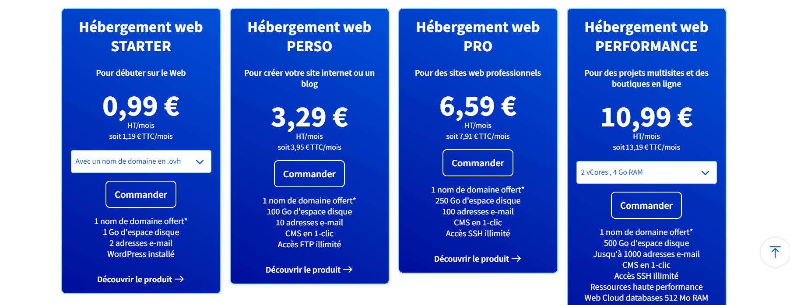
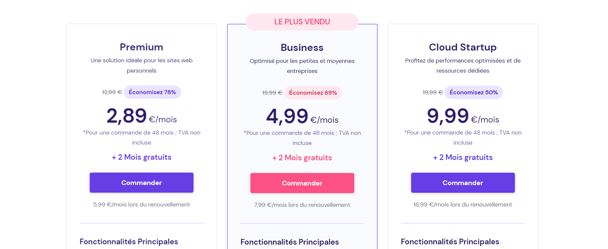

Qu'est-ce que l'hébergement Web ?
L'hébergement Web est la technologie qui permet aux utilisateurs de saisir un nom de domaine dans leur navigateur afin d'afficher le contenu du site Internet correspondant. En termes simples, lorsque vous achetez un plan d'hébergement Web, vous achetez essentiellement de l'espace sur un serveur où vous pouvez stocker les fichiers et les données nécessaires pour que votre site Web fonctionne correctement.
Comment héberger un site Web ?
Pour héberger un site web, vous avez besoin d’acheter un nom de domaine et de choisir un service d’hébergement web. Une fois que vous avez choisi votre fournisseur d'hébergement et que vous avez acheté votre plan, vous pouvez commencer à télécharger les fichiers de votre site sur le serveur hôte.
Choisir le bon plan d'hébergement
Il existe plusieurs types de plans d'hébergement disponibles, chacun offrant différents niveaux de ressources et de fonctionnalités. Par exemple, OVHcloud propose plusieurs plans d'hébergement, allant du plan "Starter" à 0,99 € HT/mois pour les débutants, au plan "Performance" à 10,99 € HT/mois pour les projets multisites et les boutiques en ligne. Chaque plan offre différentes quantités d'espace disque, de comptes e-mail et d'autres fonctionnalités
Hostinger propose également une gamme variée de plans d'hébergement adaptés à différents besoins. Leurs offres incluent des options telles que le plan "Single" à un prix très abordable, idéal pour les débutants et les petits projets, jusqu'au plan "Business" qui convient aux sites web plus importants jusqu'au plan "Cloud Startupé pour profiter de performances optimisées et de ressources dédiées. Chaque plan offre des quantités différentes de ressources telles que l'espace disque, la bande passante et le nombre de comptes e-mail, ainsi que diverses fonctionnalités pour répondre aux exigences spécifiques de chaque utilisateur. Cette diversité de plans permet aux clients de choisir celui qui correspond le mieux à leurs besoins en termes de capacités et de budget.
Hébergement gratuit vs payant
Il existe également des options d'hébergement gratuit disponibles. Cependant, bien que ces options puissent être attrayantes pour ceux qui ont un budget limité, il est important de noter que l'hébergement gratuit peut avoir des limitations en termes de bande passante, d'espace disque et de fonctionnalités par rapport à l'hébergement payant. En conclusion, l'hébergement Web est une partie essentielle du fonctionnement d'un site Web. Il est important de comprendre vos besoins spécifiques en matière d'hébergement et de choisir un plan qui répond à ces besoins.
JamStack : Révolutionnez la Création de Sites Web pour des Performances Ultras-Rapides !
Jamstack est une approche architecturale qui découple la couche d’expérience web des données et de la logique métier, améliorant la flexibilité, l’évolutivité, les performances et la maintenabilité. Il s’agit d’une méthode permettant de créer des applications web rapides et légères en utilisant principalement JavaScript, des API et des balises (HTML/CSS). Cette architecture permet aux développeurs de créer rapidement et de servir efficacement des sites Web statiques aux utilisateurs
Le Cloud Computing : Votre Passage Vers l'Informatique Sans Limites
Le cloud computing transforme l’infrastructure TI en un utilitaire: il vous permet de vous connecter à l’infrastructure via Internet et d’utiliser les ressources informatiques sans les installer ni les entretenir sur site. Il s’agit d’un accès à la demande, via Internet, aux ressources informatiques (applications, serveurs, stockage de données, outils de développement, capacités de mise en réseau, etc.) hébergés dans un centre de données distant géré par un fournisseur de services cloud. Le cloud computing offre plusieurs avantages pour les entreprises comme par exemple : la réduction de coûts IT, la scalabilité, l’optimisation de la collaboration dans les pratiques de travail et de suivi client et l’accès aux mises à jour automatiques.
Serveur FTP : L'Essentiel pour un Transfert de Fichiers Facile et Sûr
Un serveur FTP est un logiciel qui permet aux utilisateurs de télécharger des fichiers à partir de serveurs à l’aide du protocole FTP (File Transfer Protocol). Ce serveur peut fonctionner sur n’importe quelle machine sur laquelle est installé le logiciel File Transfer Protocol Server. FileZilla est un exemple populaire d’une solution FTP gratuite qui prend en charge non seulement FTP, mais aussi FTP sur TLS (Il s'agit d'une version plus récente et sécurisée de FTP qui crypte votre connexion, ce qui signifie qu'un tiers ne peut pas voir les fichiers que vous déplacez.) et SFTP (Secure File Transfer Protocol).
Hostinger est un hébergeur de plus en plus populaire en France mais aussi à travers le monde. Il propose surtout, d’après moi, le meilleur hébergement web en 2023. La raison principale vient du fait qu’il propose d’excellents plans d’hébergement mutualisé qui s’avèrent être performants et disponibles à des prix plus que raisonnables. Ils sont faits sur mesure afin de satisfaire aussi bien ceux qui souhaitent créer leur tout premier site, qu’un public un peu plus professionnel. Hostinger ne se contente pas de proposer des hébergements mutualisés. Vous allez aussi retrouver des VPS, de l’hébergement Cloud, ou encore de l’hébergement spécialisé WordPress. Peu importe le type de plan que vous allez choisir, le constat est le même : vous aurez accès à un hébergement vraiment abordable(Tarifs)D’un point de vue performances et uptime, Hostinger est irréprochable. C’est d’ailleurs un des points le plus important quand il est question d'hebergement web, ça a évidemment pesé beaucoup pour mon choix. Avec des datacenters localisés en Europe et certifiés Tier III, vous allez avoir la garantie que votre site sera disponible 99,99% du temps. Pour ceux à qui cet indicateur ne parle pas trop, cela signifie que votre hébergement sera en moyenne, sur une année, uniquement indisponible pour quelques minutes.
(1) Qu'est-ce que l'hébergement web : définition et types | one.com.
(2) Comment Héberger un Site Web : 5 Étapes Simples - Hostinger
(3) Hébergement Web | Comparer, Acheter, Héberger un site web | OVHcloud
(4) Les 8 meilleurs services d'hébergement Web gratuits 2023 - Website Planet
(5) Qu’est-ce qu’un hébergement ?| ionos.fr
(6) Site officiel Hostinger| https://www.hostinger.fr
(7) What is Jamstack ?| jamstack.org
(8) Qu'est-ce que le cloud computing ?| ibm.com
(9) Cloud computing| fr.wikipedia.org
(10) Best FTP Server Software and Tools for 2023| geekflare.com
(11) A Beginner's Guide to Jamstack| freecodecamp.org
(12) Qu’est-ce que le cloud computing ?| azure.microsoft.com
(13) Serveur FTP| clubic.com